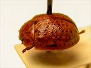
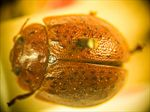
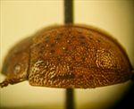
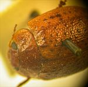
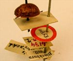
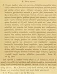

Click on images to enlarge
.jpg){kind=link}

Fig. 1. Paropsis leai type specimen, lateral view
.jpg){kind=link}

Fig. 2. Paropsis leai type specimen, dorsal view
.jpg){kind=link}

Fig. 3. Paropsis leai type specimen, lateral view
.jpg){kind=link}

Fig. 4. Paropsis leai type specimen, dorsal view
.jpg){kind=link}

Fig. 5. Paropsis leai type specimen and labels
{kind=link}

Fig. 6. Paropsis leai, description
Name
Paropsis leai Blackburn, 1896
Corresponds to
Likely Ta29.
Diagnosis and Notes
Blackburn (1896) deals with T. leai as part of his 'subgroup iii' (i.e., those species without "strongly marked characters", whose greatest height is not or scarcely in front of the middle of the elytral margin and whose elytra are not depressed under the humeral callus). Within that group, he characterises it as:
A. Elytra with a distinct postbasal impression on disc;
B. Elytral margin (viewed from the side) straight or but little sinuous;
CC. Elytral interstices not, or but very feebly, rugulose, not obscuring the punctures;
DD. Prothorax not, or but little, rugulose;
EE. Species of more convex form [than grossa or seriata]; upper outline (viewed from side) a continuous curve;
FF. Prothorax sparsely punctulate.
This species is either close to or the same as Ta29. Ta29 is a rather variable species in the form of its elytral sculpture, but the type specimen's arrangement of verrucae is almost identical to that of typical specimens from far south-eastern New South Wales. Its size is well within the Ta29 size distribution of males, its inter-ocular distance (A-A) fits exactly and the HCE/BL ratio is within range, albeit slighly on the low side. The two black spots on the pronotum are in the same position as those in Ta29, with a sparsely punctured scutellum present in a proportion of specimens of Ta29. Specimens of Ta29 are completely black ventrally: Blackburn indicates black variegated with red ('subtus piceo- rufoque-variegata'); I suspect this specimen is probably teneral (it is much paler dorsally than expected for a specimen of Ta29), and hence the lack of total black colouration ventrally.
Type specimen
Location: BMNH
Label data: /“Type” (red-bordered circle)/ “6184 N.S.W. T”/ “Blackburn coll. 1910-236.”/ “Paropsis leai Blackb.”/.
Male; Size: 7.0 (L) x 5.45 (W) x 2.85 (H) mm; A-A: 1.19 mm; HCE/BL: ~19.5 % (estimated from photo of lateral view).
Original description
Translation of original description (Figure 6) by ChatGPT, 04/2026:
♂. Ovate; moderately broad; fairly convex, of greater height (in lateral view), with the highest point placed opposite or nearly before the middle of the elytral margin; fairly shiny; beneath variegated with pitchy and reddish; above testaceous-brown, with the pronotum having four small spots (these arranged transversely on the disc) and the elytra with dark verrucae; antennae reddish, becoming pitchy toward the apex; legs pitchy, more or less variegated with reddish. Head rather closely and not very finely punctulate. Pronotum broader than long as about 2⅔ to 1, from the apex broadened well beyond the middle, behind the apex lightly transversely impressed, rather finely and somewhat sparsely (at the sides more coarsely, not confluent) punctulate; sides fairly rounded, not at all flattened; posterior angles rounded. Scutellum very sparsely punctulate. Elytra not depressed below the humeral callus, behind the base transversely impressed; more strongly and less closely somewhat in rows (at the sides scarcely more, posteriorly scarcely less, strongly) punctulate; with small verrucae, fairly numerous, fairly regularly arranged in rows; interspaces not rugulose; marginal part fairly broad, scarcely distinctly separated from the disc (more distinctly so toward the apex); the inner margin of the humeral callus much more distant from the suture than from the lateral margin of the elytra; basal ventral segment sparsely and finely punctulate. Length 3½ lines [~7.4 mm]; width 2½ lines [~5.3 mm].
References
Blackburn, T. 1896, "Revision of the genus Paropsis. Part I", Proceedings of the Linnean Society of New South Wales, vol. 21, no. 4, 637-693 (page 685).
Copyright © 2026. All rights reserved.